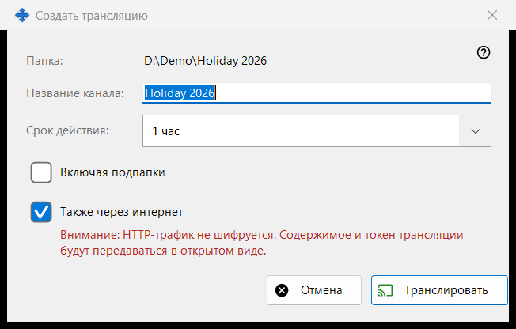
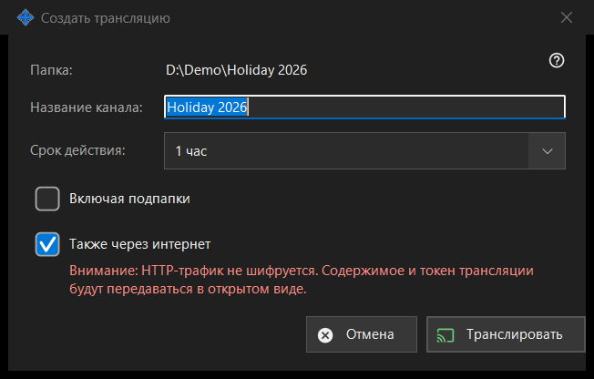

Создать трансляцию
Назначение
Настраивает одну трансляцию до её создания: название, срок жизни и выход за пределы локальной сети. Диалог открывается из окна трансляций по кнопке «Создать трансляцию..» для выбранного файла или папки. Ничего не создаётся и не отправляется, пока вы не нажмёте «Транслировать».


Порядок действий
- Проверьте путь в первой строке («Папка:» или «Файл:»).
- При желании измените «Название канала:»; сначала это имя папки или файла.
- Выберите «Срок действия:».
- Для папки включите «Включая подпапки», если они нужны.
- Оставьте или снимите «Также через интернет».
- Нажмите «Транслировать» (Enter) или «Отмена» (Escape).
Элементы окна
Название и срок действия
Название канала - то, что показывает список трансляций. Срок действия: 24 часа (по умолчанию), 1 час, 7 дней или «До отзыва» - без конечной даты, трансляция живёт, пока вы не отзовёте её в окне трансляций.
Включая подпапки
Показывается только для папки и по умолчанию выключено. Определяет, попадут ли в трансляцию файлы из вложенных папок.
Также через интернет
Включено, если в настройках раздачи экспорт не ограничен локальной сетью. Когда флажок стоит, ссылка содержит рядом с локальным адресом ещё и адреса этого ПК в интернете (IPv6 и с проброшенным портом), если они известны. Включение переключает срок действия с 24 часов на 1 час (можно вернуть) и показывает красное предупреждение: HTTP-трафик не шифруется, содержимое и токен трансляции передаются в открытом виде. Любой, у кого есть ссылка, может читать файлы трансляции, пока срок не истёк или она не отозвана. Снимите флажок, чтобы трансляция оставалась в локальной сети.
Транслировать и Отмена
«Транслировать» только возвращает ваш выбор окну трансляций, а оно создаёт трансляцию и копирует её ссылку. «Отмена» закрывает диалог, ничего не создавая.
Настройки менеджера · Настройки общего доступа SFTP · Настройки сервера обмена